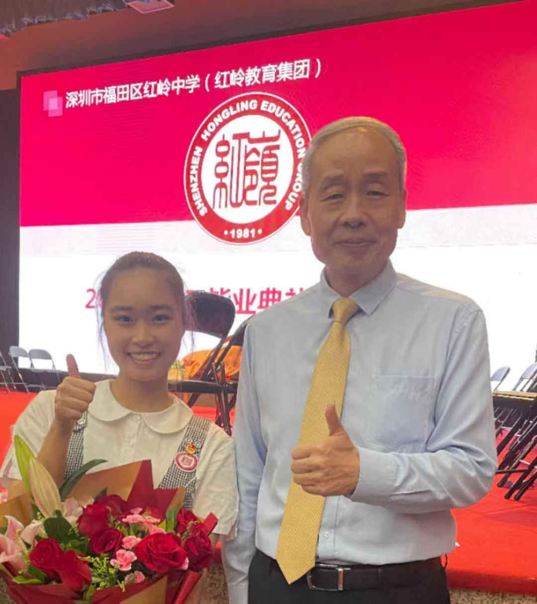
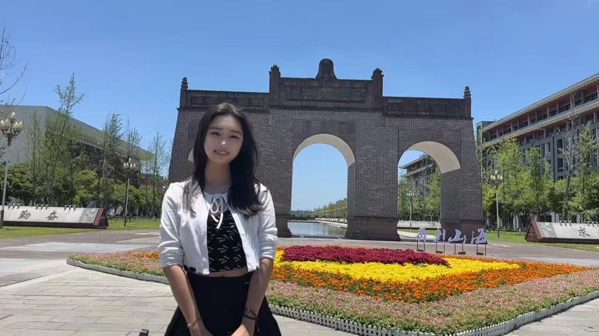
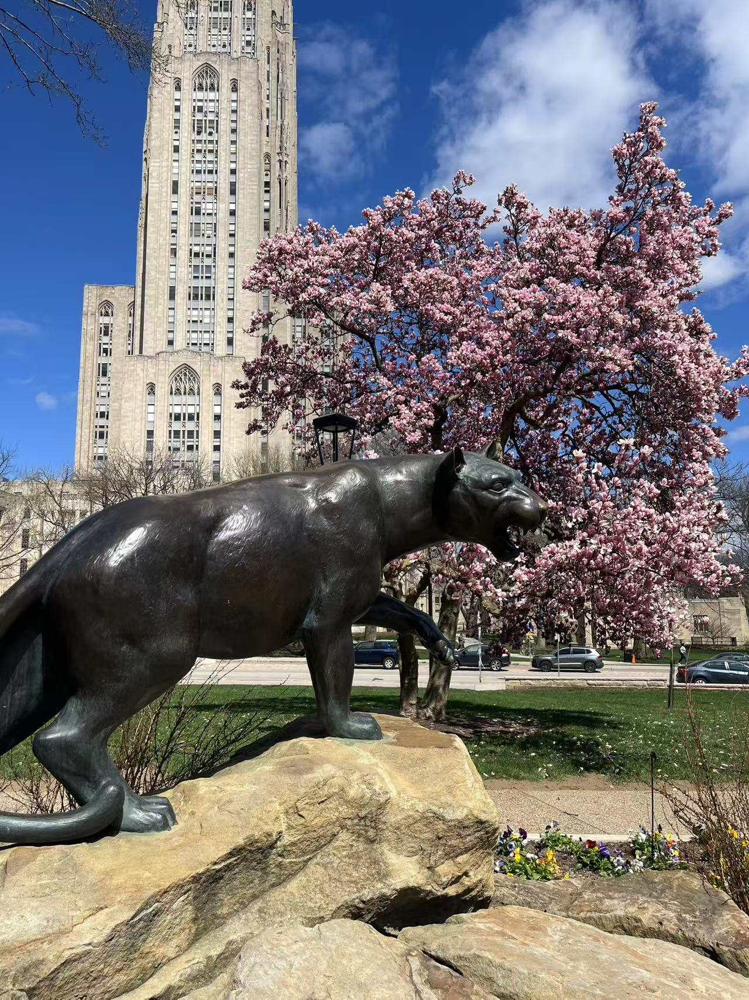
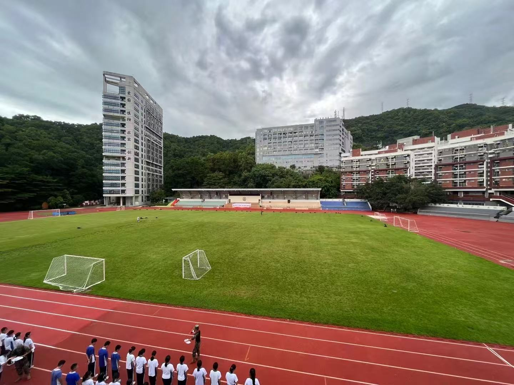
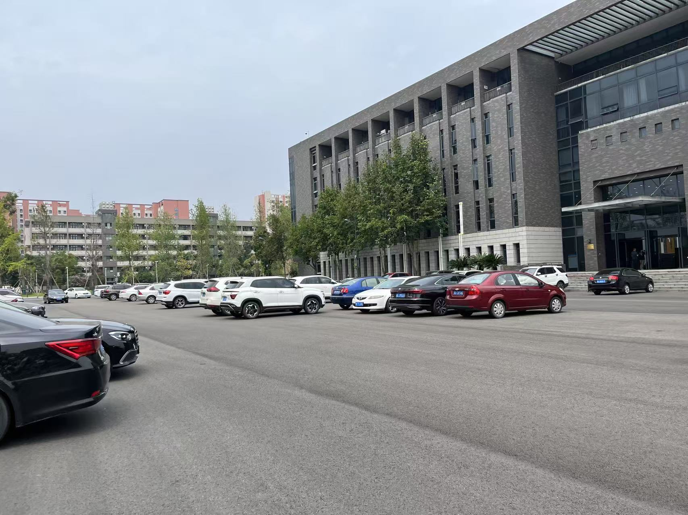
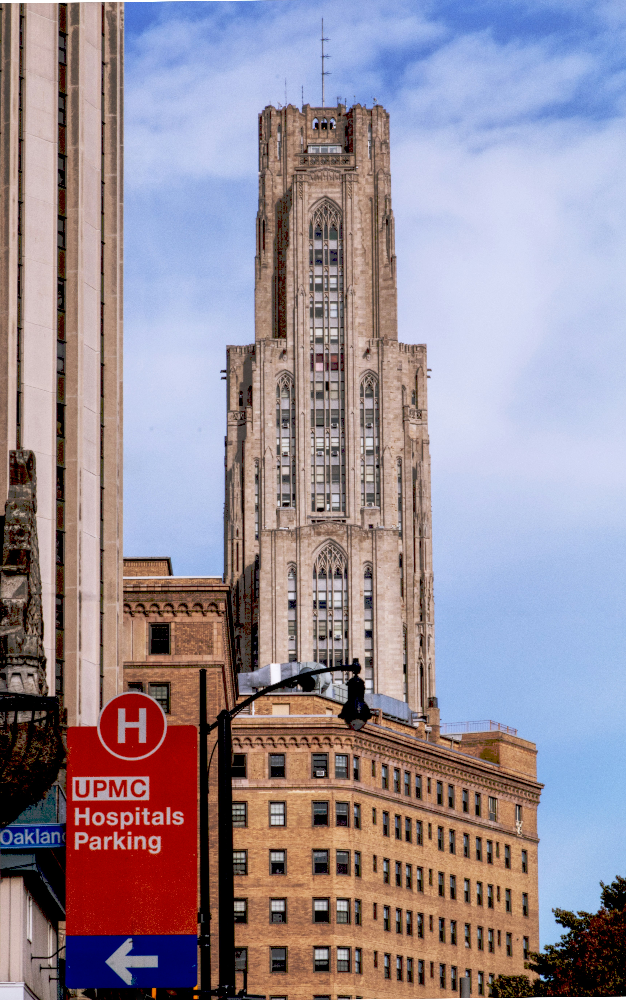
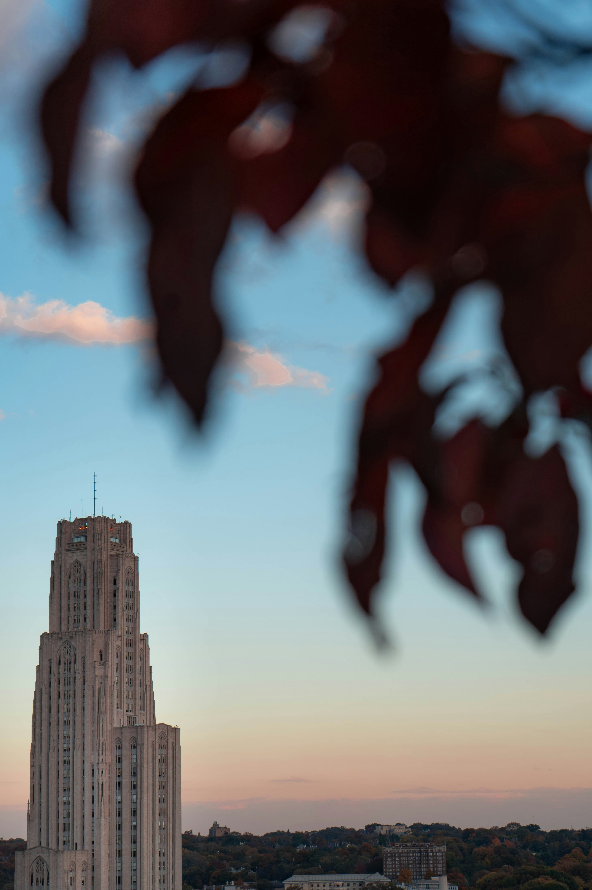

Hello! I'm Yang, a passionate and energetic computer science student with interests in machine learning, medical imaging, and algorithm design. I love solving problems and learning through real-world research and internships.
Here's a look at my academic journey, from high school to university:

I attended Hongling High School in Shenzhen. This school fostered my curiosity and gave me the foundation to pursue my academic interests.

My university life began at Sichuan University, one of the top universities in western China. It was here that I explored new areas, met amazing people, and built strong academic habits.

Now I'm studying Computer Science at the University of Pittsburgh. Pitt's diverse community and rich research resources have allowed me to grow personally and academically.
Hongling High School is a prestigious key secondary school located in Shenzhen, China, renowned for its excellent academic quality and vibrant campus culture.
The school is equipped with advanced teaching facilities and supported by a highly experienced and dedicated faculty. It is committed to cultivating well-rounded students with a strong global perspective and innovative mindset.
With a strong focus on holistic education, Hongling encourages students to thrive across academics, sports, and the arts. Its students have achieved outstanding results in various municipal, provincial, and national competitions.
Guided by the school motto “Virtue, Scholarship, and the Pursuit of Excellence”, Hongling strives not only to deliver knowledge, but also to nurture students with a strong sense of responsibility, leadership, and creativity, empowering them to become future-ready individuals.

Sichuan University is a prestigious and comprehensive university located in Chengdu, Sichuan Province, China. It is recognized as a key institution under China's national “Double First-Class” initiative.
The university was formed through the merger of the former Sichuan University, the former Chengdu University of Science and Technology, and the former West China University of Medical Sciences. It offers a wide range of disciplines, including liberal arts, science, engineering, and medicine, and ranks among the top universities in China.
With the motto “Embrace All Streams, Hold Great Capacity”, Sichuan University emphasizes both academic innovation and talent cultivation. It is home to numerous national key laboratories and research centers, fostering cutting-edge research across disciplines.
The campus is known for its beautiful environment and rich cultural heritage. Over the years, the university has produced a large number of highly qualified graduates and enjoys a strong reputation both in China and internationally.

The University of Pittsburgh (commonly known as Pitt) is a world-renowned research university located in Pittsburgh, Pennsylvania, USA. Founded in 1787, it boasts a long history and a strong academic reputation.
As one of the top public universities in the United States, Pitt is widely recognized for its excellence in medicine, engineering, computer science, business, and law. It is especially distinguished in the fields of medical and biomedical research, with its affiliated University of Pittsburgh Medical Center (UPMC) ranked among the world’s leading healthcare institutions.
Pitt embraces a philosophy that combines innovation with practical experience, offering students a wealth of opportunities in research and internships across disciplines.
With its inclusive academic environment and beautiful campus, Pitt attracts outstanding students from all over the world who are eager to pursue knowledge, collaboration, and global impact.

